Merchant interviews
We planned targeted conversations with Shopify merchants to hear how they talked about acquisition, referrals, loyalty, and post-purchase tools in their own words.

Research, Web Dev
Context
This product case study for Redo explores how a referral rewards feature could work, why it matters to merchants, and how it could be positioned as a real product.
Role
Project manager
Duration
January 2026 to May 2026
Team
Sejal Bilwar, Eric Lan, Alexa Kaur Sidhu, Leinita Panda, Lindsay Lai, Selina Zhang
Tools
Research, prototyping, Cursor
Project Overview
This project started with a broad prompt from Redo: explore whether a referral reward feature could become a meaningful extension of their post-purchase platform. Instead of jumping straight into UI, we structured the work like a full case study, beginning with merchant pain points, framing a product strategy, and then translating those insights into a prototype and launch story.
As co-project manager, I helped shape the initial scope, organize the team’s deliverables, and make sure the research, product thinking, and presentation all connected into one cohesive narrative.
Problem Space
The original PRD positioned Referral Reward around a simple idea: right after a customer completes a purchase, they are at a high point of satisfaction and more likely to share a brand they trust. The challenge is that existing referral tools often feel bolted on, overly complex, or disconnected from the actual checkout experience.
Redo’s opportunity was to turn that brief post-purchase window into a structured acquisition channel with a setup flow simple enough for busy Shopify merchants to actually use.
Project Context
Redo is an ecommerce software company focused on what happens after checkout: returns, exchanges, support, and order tracking. Their broader mission is to reduce friction, save merchants time, and strengthen customer loyalty.
That context mattered. Rather than imagining a referral tool in isolation, we were designing a feature that could live inside an ecosystem merchants already use to manage retention and customer relationships.
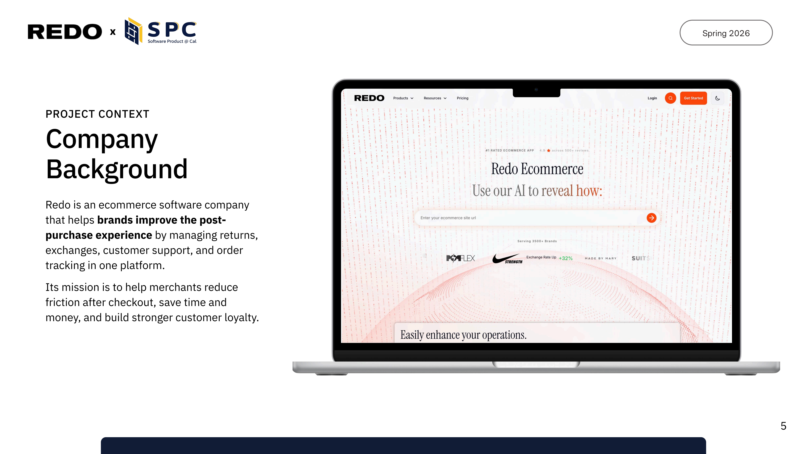
Scope
In our initial project plan, my co-project manager and I broke the work into three tracks that would reinforce one another instead of drifting apart.
This structure helped us stay grounded in strategy while still building tangible artifacts.
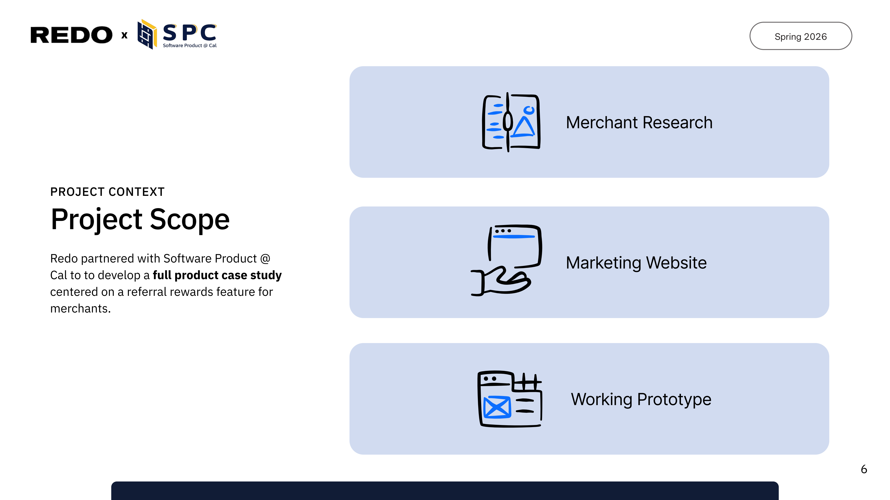
Our Process
The final deck summarized the project as a timeline, but in practice this process helped us make better decisions at each step. We used qualitative discovery to understand merchants, synthesized those learnings into product and marketing choices, validated the core assumptions through prototype thinking, and then packaged everything into a clear final story.
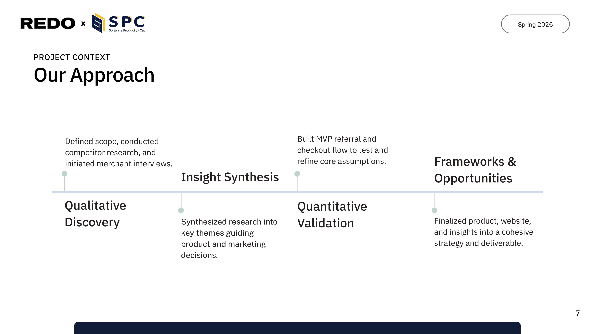
Research Setup
The research packet and kickoff notes made one thing clear: merchants would not give us the product solution for free. Our job was to understand the pain points behind acquisition, loyalty, and post-purchase engagement, then use those patterns to shape the feature.
Our research plan focused on questions like:
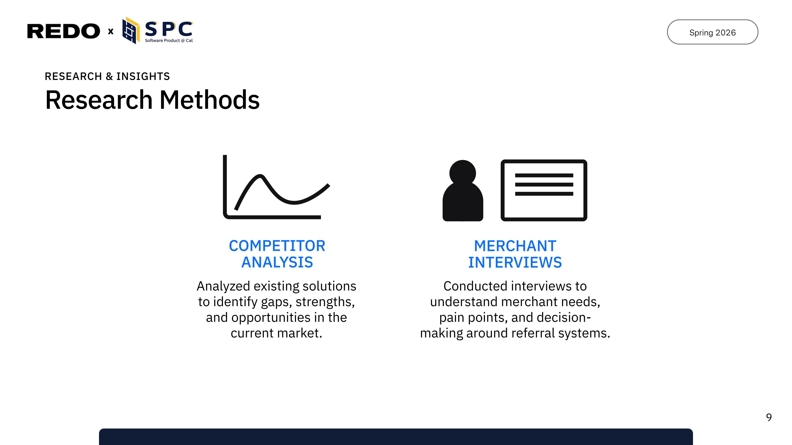
Research Goals
We planned targeted conversations with Shopify merchants to hear how they talked about acquisition, referrals, loyalty, and post-purchase tools in their own words.
We studied returns, loyalty, and referral products to understand what was already in market, where the flow broke down, and how Redo could feel differentiated.
Our initial plan also called for a product decisions document that would connect merchant needs to a clear target segment, pain points, and feature choices.
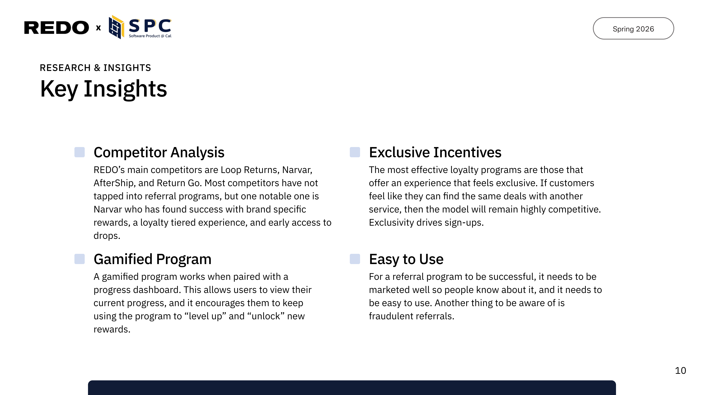
Synthesis
Looking across research articles, market examples, and our team synthesis, a few consistent themes emerged. Referral programs work best when they feel easy to use, clearly promoted, and worth sharing. They also become stronger when the reward feels somewhat exclusive rather than generic.
We also noted that gamification only becomes meaningful when users can see progress. A reward alone is not enough; the system needs visibility, momentum, and a reason to come back.
Merchant Insights
The interviews pushed us away from a one-size-fits-all assumption. Some brands felt referrals would not work because their products were too niche or already driven by organic trust. Others saw strong potential, especially when discoverability had become a challenge.
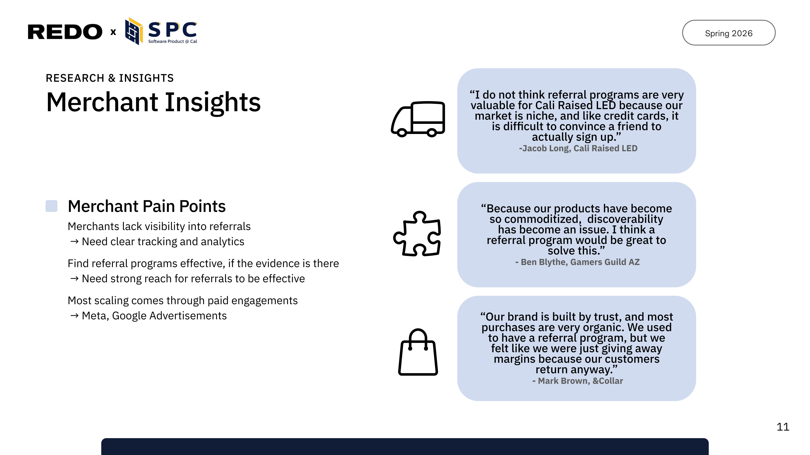
What We Learned
Community-driven and highly referable brands may benefit more than niche or strongly organic brands that already convert through trust alone.
Merchants choose Redo because it reduces operational burden. If referrals required too much customization or technical help, the concept would lose its edge.
Merchants were interested in referrals when performance could be tracked clearly, rewards felt financially sensible, and the flow did not create abuse or confusion.
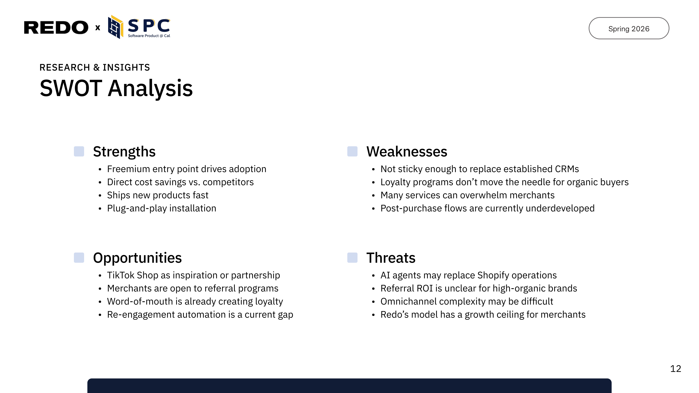
Frameworks
The SWOT analysis helped us move from scattered observations into product strategy. We mapped what already made Redo attractive, where the product still felt weak, where the market was open, and what risks could keep a referral product from gaining traction.
This reframed the project from “build a referral tool” into “design a referral system that fits Redo’s business model, merchant expectations, and product positioning.”
Opportunity Areas
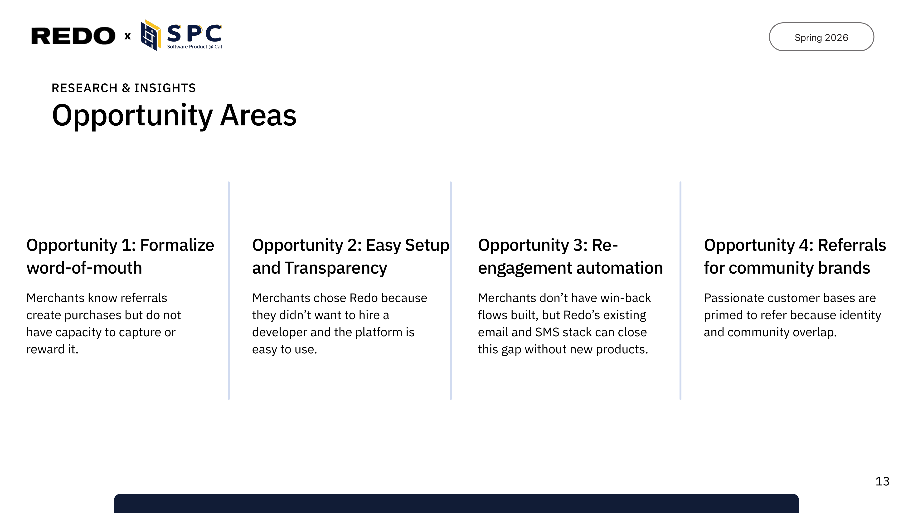
Merchants already believed referrals create purchases, but many lacked the structure to capture and reward that behavior systematically.
Redo needed to feel lightweight and merchant-friendly, especially for brands that do not want to hire a developer or manage another complex tool.
Redo’s existing email and SMS capabilities suggested a path to support referrals and win-back moments without forcing a totally separate ecosystem.
Some merchants are especially well-positioned for referrals because customer identity, loyalty, and community already overlap.
Product Definition
The original product definition placed Referral Reward under Marketing > Loyalty inside the Redo merchant portal. The core concept was bilateral rewards: when a customer refers a friend who purchases, both sides receive a benefit.
Key decisions from the PRD included:
Configure rewards, timing, and eligibility from one dashboard.
Present the referral offer exactly when purchase satisfaction is highest.
Trigger rewards only after the referred friend completes a successful purchase.
Marketing Website
The deck framed the website as more than a portfolio artifact. It needed to position Referral Reward like something Redo could actually launch: credible, easy to understand, and directly tied to merchant value.
That meant leading with clarity over complexity. The site needed to explain the concept fast, establish trust, and show enough of the flow that merchants could imagine adopting it.
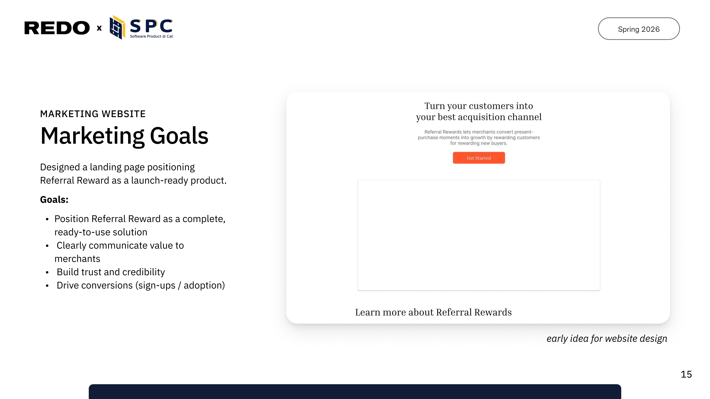
Website Structure
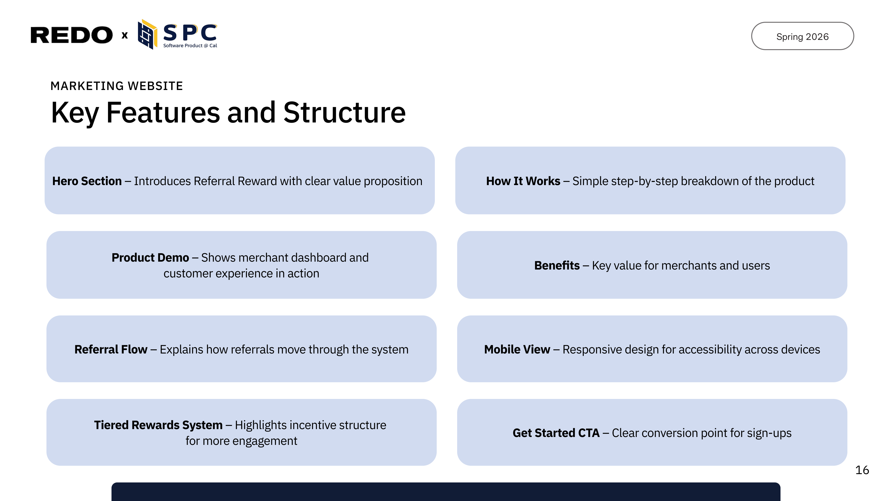
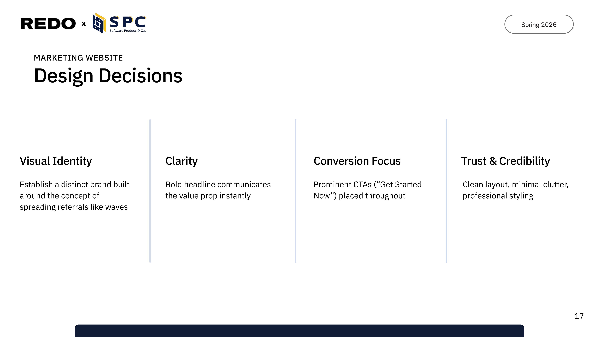
The structure emphasized a clear hero section, a product demo, the referral flow, tiered rewards, benefits, responsive design, and repeated calls to action. Visually, the site leaned on a clean layout and strong conversion moments so the idea felt polished and launch-ready rather than speculative.
Feature Prototype
The prototype work focused on proving the core mechanics: merchant onboarding, customer sharing behavior, referral capture, and automated reward delivery. This was important because the website could sell the concept, but the prototype had to show that the flow actually made sense as a product.
The final deck grouped the prototype into three parts: the merchant dashboard, the customer experience, and the referral engine connecting them.
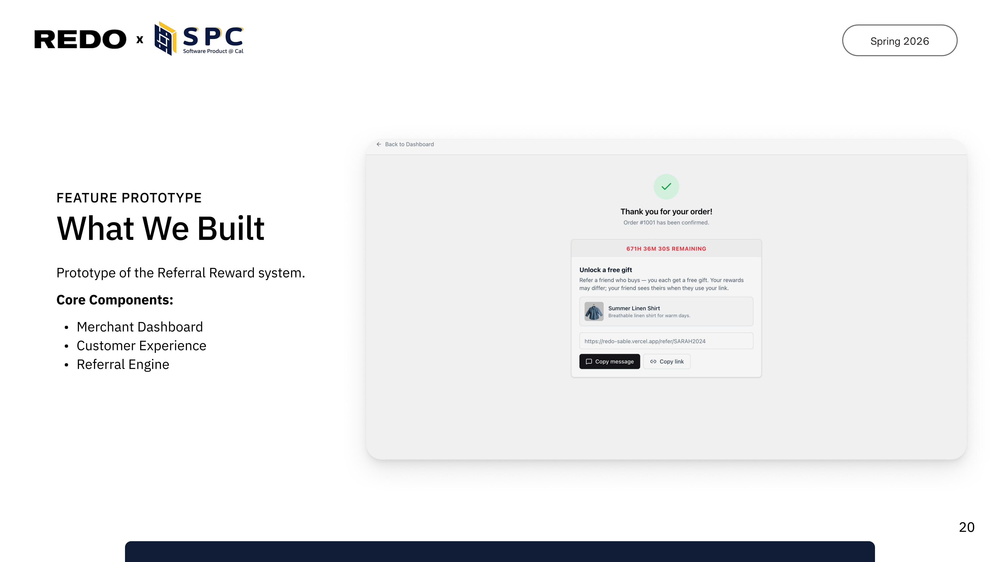
Core Features
Generate a unique, shareable referral code for each customer after purchase.
Let merchants configure reward type, amount, time window, and product eligibility.
Issue rewards once a referred order is completed, rather than relying on manual tracking.
Surface referral status, conversion rate, and issued rewards in a live dashboard.
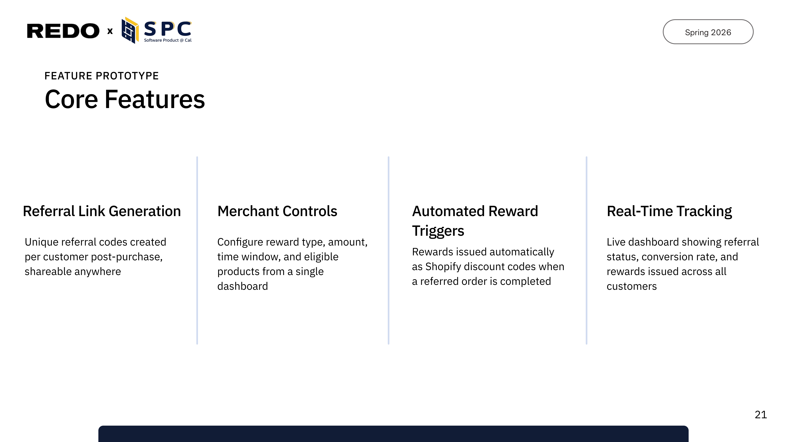
Prototype Flow
This flow made the product logic tangible. It clarified what merchants needed to configure, when the customer would see the referral offer, how the referred friend’s purchase would be captured, and where the system would automate the reward.
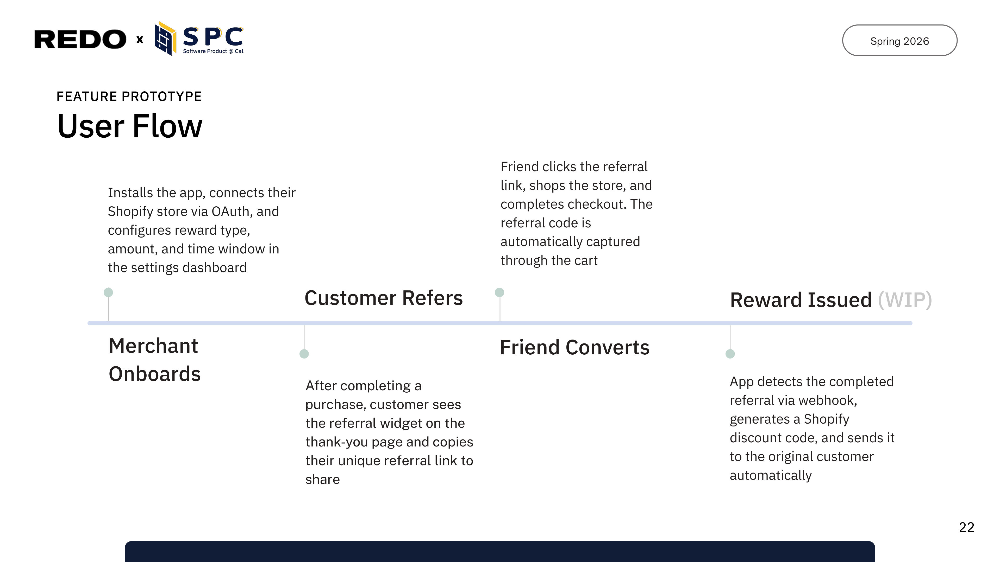
Outcome
By the end of the project, we had not just proposed a feature. We had shown where the idea fit within Redo’s existing platform, why certain merchants would care, what the experience should look like, and how the concept could be communicated as a viable product.
That process mattered as much as the final output. The strongest part of this project was the way research informed strategy, strategy shaped the prototype, and the prototype then strengthened the final narrative.